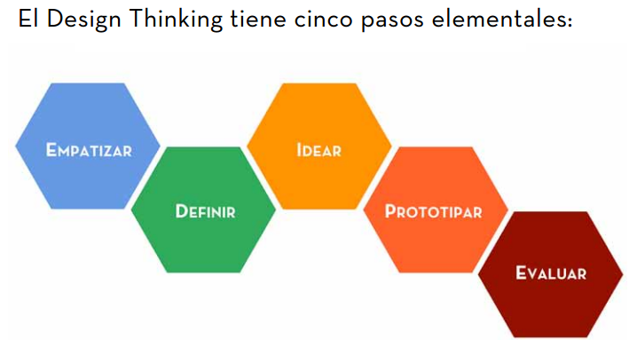
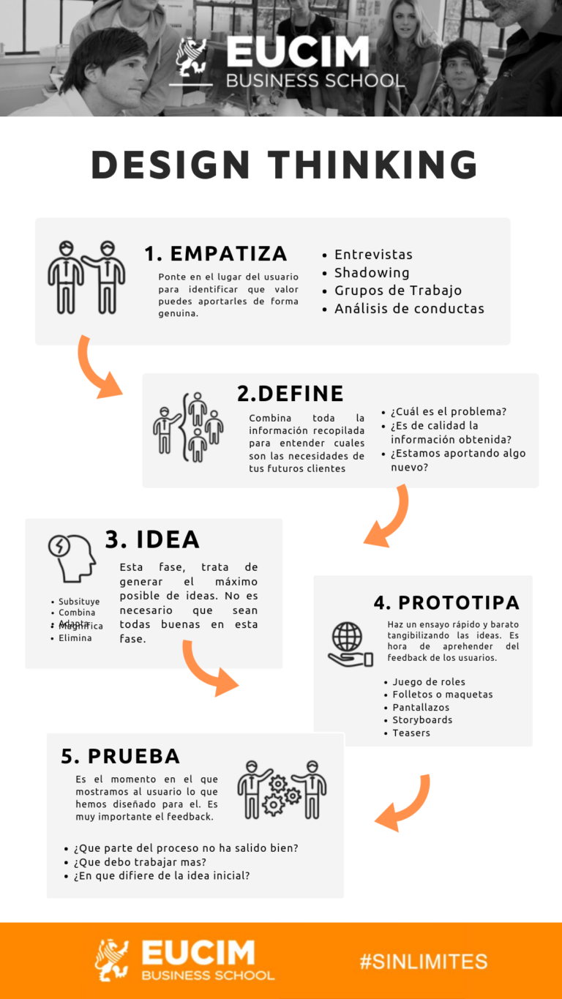

Design Thinking: crear soluciones centradas en las personas
Aprende una metodología creativa utilizada para investigar necesidades, generar ideas, construir prototipos y mejorar experiencias digitales.

Antes de diseñar, comprende el problema
Un buen diseño no comienza con colores o elementos visuales. Comienza entendiendo personas, necesidades y situaciones reales. El Design Thinking convierte una idea inicial en una solución funcional.
Las cinco etapas del Design Thinking
Este proceso permite pasar de una problemática inicial a una propuesta validada mediante investigación, creatividad y evaluación.
Empatizar
Investigar usuarios, emociones, necesidades y comportamientos.
Definir
Analizar la información obtenida y establecer el problema principal.
Idear
Crear diferentes alternativas y propuestas innovadoras.
Prototipar
Construir modelos iniciales para representar una posible solución.
Evaluar
Realizar pruebas con usuarios y mejorar continuamente.
Storytelling del aprendizaje
La historia comienza con un estudiante de Diseño Multimedia que necesita crear un proyecto digital pero no sabe cómo transformar su idea en una experiencia funcional.
El reto inicial
Crear una interfaz atractiva no es suficiente si no responde a una necesidad real del usuario.
El proceso creativo
El Design Thinking permite investigar, ordenar ideas y desarrollar soluciones centradas en personas.
La solución final
El resultado es un proyecto más accesible, funcional y basado en una mejor experiencia de usuario.
Ejemplo aplicado: Diseño de una aplicación

Un equipo necesita mejorar una aplicación donde los usuarios tienen dificultades para encontrar información importante.
- ✔️ Empatizar: entrevistas con usuarios.
- ✔️ Definir: detectar problemas principales.
- ✔️ Idear: generar nuevas soluciones.
- ✔️ Prototipar: crear una primera versión.
- ✔️ Evaluar: probar y optimizar.
Recursos multimedia
Materiales visuales e interactivos que fortalecen el aprendizaje dentro de la Wiki UX.
Video Explicativo
Infografía Design Thinking
